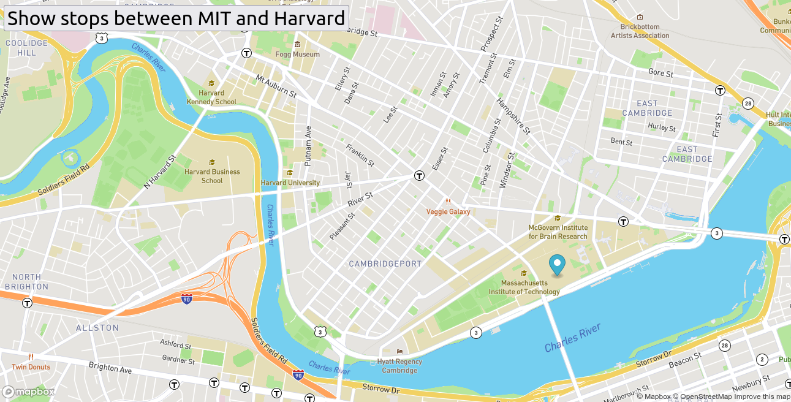

In this project we describe the game of random movement of pacman or several pacman created by clicking a button by the user and then put them
in random movement at random speed where in case they hit the edges of the screen, they bounce and stay in their movement within the web page.
PacmenRepository
Eye Exercise
Description
Making use of the mouse on web pages makes practical use of the mouse where the eyes follow the movement of the mouse cursor across the screen.
Eye exerciseRepository
Real Time Bus Tracker

Description
Performs an animated tracking of the route of the main bus stops in real time from MIT to Harvard university located in
Boston, Massachusetts.
Real Time Bus TrackerRepository